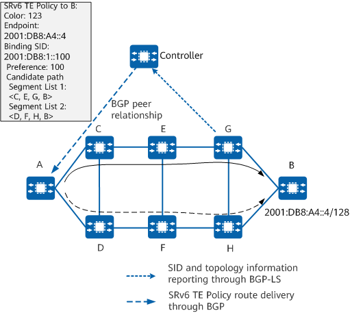

Controller-based Dynamic SRv6 TE Policy Delivery
An SRv6 TE Policy can be manually configured on a forwarder through the CLI or NETCONF. Alternatively, it can be delivered to a forwarder after being dynamically generated through a protocol (such as BGP) on a controller — this mode facilitates network deployment. If SRv6 TE Policies generated in both modes exist, the forwarder selects an SRv6 TE Policy according to the following rules:
- Protocol-Origin of SRv6 TE Policy: The default value of Protocol-Origin is 20 for an SRv6 TE Policy delivered through BGP and is 30 for a manually configured SRv6 TE Policy. A larger value indicates a higher preference.
- <ASN, node-address> tuple of SRv6 TE Policy: ASN indicates an AS number. For both ASN and node-address, a smaller value indicates a higher preference. The ASN and node-address values of a manually configured SRv6 TE Policy are fixed at 0 and 0.0.0.0, respectively.
- Discriminator: A larger value indicates a higher preference. For a manually configured SRv6 TE Policy, the value of Discriminator is the same as the preference value.
An SRv6 TE Policy can be created using End SIDs, End.X SIDs, anycast SIDs, binding SIDs, or a combination of them.
Figure 1 shows the process in which a controller delivers an SRv6 TE Policy. The main process is described as follows:
The controller collects information, such as network topology and SID information, through BGP-LS.
The controller and headend forwarder establish a BGP IPv6 SR-Policy address family-specific BGP peer relationship.
The controller computes an SRv6 TE Policy and delivers it to the headend forwarder through the BGP peer relationship. The headend then generates an SRv6 TE Policy entry.
Figure 1 Controller-based SRv6 TE Policy delivery
Controller-based SRv6 TE Policy delivery can be implemented in either of the following modes:
- Manually deploy an SRv6 TE Policy and configure a binding SID within the static segment of the corresponding locator. Then, use the controller to deliver a candidate path of the SRv6 TE Policy, with the configured binding SID as the binding SID of the SRv6 TE Policy.
- Use the controller to directly deliver an SRv6 TE Policy that carries a binding SID within the dynamic segment of the corresponding locator or does not carry any binding SID at all. (In the latter case, the forwarder receiving the policy randomly allocates a binding SID within the dynamic segment of the corresponding locator.)
After receiving the SRv6 TE Policy, the forwarder reports the SRv6 TE Policy status information containing the effective binding SID to the controller through BGP-LS. This allows the controller to obtain the binding SID of the SRv6 TE Policy, and then use the binding SID for SRv6 path orchestration.